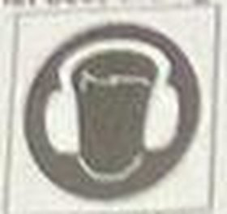
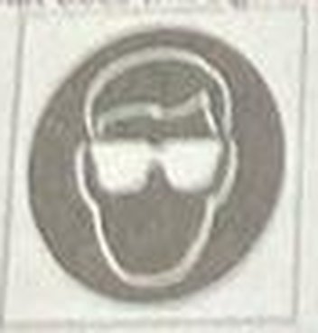
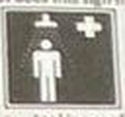
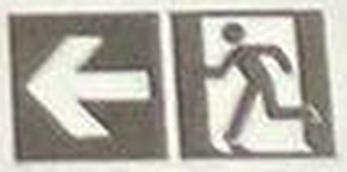

ES 411 OCCUPATIONAL HEALTH AND SAFETY I – FINAL EXAM – JANUARY 2023
This examination is comprised of 50 multiple-choice questions. Each question is followed by three or four possible answers, of which only one is correct. The maximum time for this examination is 40 minutes.
Kitapçık iki fotoğraftan okundu; sayfa 4 (S37–50) eğik/italik ve düşük çözünürlüklü olduğundan bu sorularda yazım hataları olabilir.
Fotoğraflarda öğrencinin soru üzerindeki işareti görünmediği için 'marked' alanları null; cevaplar bizzat çözüldü.
Öğrenci adı/numarası aktarılmadı ve görsel kırpımlarında yer almıyor.
Orijinal metindeki yazım hataları korundu (ör. 'Overactive', 'googles').
Bir şıkkı işaretlediğinizde doğru cevap görünür. Seçiminiz bu tarayıcıda saklanır.
0 / 50 cevaplandı
1. What does OSH stand for?
Doğru cevap: C · Çözüm (kaynakta işaret yok, doğrulanmamış)
2. Harm or adverse health effects on something/someone at work known as a ______
Doğru cevap: C · Çözüm (kaynakta işaret yok, doğrulanmamış)
3. What does PPE stand for?
Doğru cevap: B · Çözüm (kaynakta işaret yok, doğrulanmamış)
4. Toxic properties are known as ..........
Doğru cevap: C · Çözüm (kaynakta işaret yok, doğrulanmamış)
5. Mobbing are known as ..........
Doğru cevap: D · Çözüm (kaynakta işaret yok, doğrulanmamış)
6. The chance or probability that a person will be harmed or experience an adverse health effect
Doğru cevap: C · Çözüm (kaynakta işaret yok, doğrulanmamış)
7. Which of the following is NOT an example of personal protective equipment?
Doğru cevap: B · Çözüm (kaynakta işaret yok, doğrulanmamış)
8. What is the best way of dealing with a hazard to ensure others are not put at risk?
Doğru cevap: B · Çözüm (kaynakta işaret yok, doğrulanmamış) · Kontrol hiyerarşisine göre tehlikeyi ortadan kaldırmak (eliminasyon) en iyisi.
9. Workplace safety and solving OSH problems are the responsibility of ______
Doğru cevap: A · Çözüm (kaynakta işaret yok, doğrulanmamış) · 6331 sayılı Kanun md. 4: İSG yükümlülüğü esas olarak işverene aittir; sınavlar arası tutarlılık için tüm sınavlarda 'Employers' kabul edildi. (Önceki cevap: Everyone.)
10. A worker has large hands; he just used the last pair of large gloves in the box. He looked everywhere and there are no large gloves available. Which action(s) should he take as first step?
Doğru cevap: B · Çözüm (kaynakta işaret yok, doğrulanmamış) · Şık c kâğıtta 'file a complaint the supervisor' şeklinde basılı.
11. Which one of the agencies is NOT one of the main responsible of Occupational Health and Safety?
Doğru cevap: B · Çözüm (kaynakta işaret yok, doğrulanmamış) · Asıl sorumlu kurumlar ÇSGB, SGK ve İSG Genel Müdürlüğü kabul edildi; Sağlık Bakanlığı da kısmen rol alır.
12. A worker was injured in a traffic accident while he was going to his job with his own car. Is this a work accident or NOT?
Doğru cevap: B · Çözüm (kaynakta işaret yok, doğrulanmamış) · 5510 m.13: işverence sağlanan taşıtla gidiş-gelişte iş kazası sayılır; kendi aracıyla gidişte sayılmaz. Üç şıklı soru.
13. Based on the Social Insurance and Universal Health Insurance Law No: 5510, which of the following(s) are correct?
I. The work accident only accepted when the insurance holder is at the workplace
II. The work accident accepted, when a worker carries out his/her main work when he/she is sent on duty to another place out of the workplace,
III. When a worker commutes the work on a vehicle provided by the employer.
Doğru cevap: C · Çözüm (kaynakta işaret yok, doğrulanmamış) · Önerme I yanlış (işyerinde olma şartı yok); II ve III doğru.
14. Occupational Safety Professionals in the Law No 6331 DOES NOT apply for
Doğru cevap: D · Çözüm (kaynakta işaret yok, doğrulanmamış) · 6331 m.2: silahlı kuvvetlerin faaliyetleri kapsam dışı.
15. Who determines the hazard level of the company?
Doğru cevap: C · Çözüm (kaynakta işaret yok, doğrulanmamış)
16. How many days after the accident the employer shall notify the Social Security Institution?
Doğru cevap: C · Çözüm (kaynakta işaret yok, doğrulanmamış) · 5510 m.13: iş kazası kazadan sonraki üç iş günü içinde bildirilir.
17. Who is needed additional training regarding to the Occupational Safety & Health?
Doğru cevap: B · Çözüm (kaynakta işaret yok, doğrulanmamış) · Çalışan temsilcisi ek eğitim alır.
18. Which of the following is must-have document to be an occupational physician?
Doğru cevap: D · Çözüm (kaynakta işaret yok, doğrulanmamış) · İşyeri hekimliği belgesi gerekli; 'Occupational Medicine Certificate' en yakın şık.
19. Which of the following is the advantage of ergonomics?
Doğru cevap: A · Çözüm (kaynakta işaret yok, doğrulanmamış)
20. Which of the following is NOT one of the Design Approaches of Anthropometric Design?
Doğru cevap: B · Çözüm (kaynakta işaret yok, doğrulanmamış)
21. Lifting, moving, and placing of items in various forms is known as....
Doğru cevap: B · Çözüm (kaynakta işaret yok, doğrulanmamış)
22. What does this sign mean?

Doğru cevap: D · Çözüm (kaynakta işaret yok, doğrulanmamış)
23. What does this sign mean?

Doğru cevap: C · Çözüm (kaynakta işaret yok, doğrulanmamış)
24. What does this sign mean?

Doğru cevap: C · Çözüm (kaynakta işaret yok, doğrulanmamış)
25. Warning sign should be
Doğru cevap: D · Çözüm (kaynakta işaret yok, doğrulanmamış)
26. Safe condition signs should be
Doğru cevap: C · Çözüm (kaynakta işaret yok, doğrulanmamış)
27. Prohibition signs should be
Doğru cevap: A · Çözüm (kaynakta işaret yok, doğrulanmamış)
28. What does this sign mean_?

Doğru cevap: C · Çözüm (kaynakta işaret yok, doğrulanmamış)
29. Safety signs can NOT be only ___
Doğru cevap: C · Çözüm (kaynakta işaret yok, doğrulanmamış) · emin değiliz · Soru kalıbı belirsiz; yazılı ifade tek başına güvenlik işareti türü sayılmadığı varsayıldı.
30. A red square or rectangle with a white pictogram is used for
Doğru cevap: A · Çözüm (kaynakta işaret yok, doğrulanmamış)
31. Which of the following is a type of emergency?
Doğru cevap: D · Çözüm (kaynakta işaret yok, doğrulanmamış)
32. Emergency action plan is required by
Doğru cevap: D · Çözüm (kaynakta işaret yok, doğrulanmamış) · Acil durum eylem planı yasal olarak Çalışma Bakanlığı mevzuatınca (6331 md. 11, Acil Durumlar Yönetmeliği) zorunlu kılınır; Ağustos 2024 ve Ocak 2025 sınavlarında D işaretli/seçili. (Önceki cevap: The Company.)
33. What is the goal of "Emergency Response Planning"?
Doğru cevap: A · Çözüm (kaynakta işaret yok, doğrulanmamış)
34. Which of the following is not a step of "Emergency Response Planning"?
Doğru cevap: C · Çözüm (kaynakta işaret yok, doğrulanmamış)
35. Exit door must be...
Doğru cevap: A · Çözüm (kaynakta işaret yok, doğrulanmamış)
36. Content of Emergency Evacuation Plan does NOT need to have...
Doğru cevap: C · Çözüm (kaynakta işaret yok, doğrulanmamış)
37. Which of the component does not consist the fire triangle?
Doğru cevap: B · Çözüm (kaynakta işaret yok, doğrulanmamış) · Sayfa 4 eğik ve düşük çözünürlüklü; soru kökü kısmen belirsiz okundu.
38. Which of the following is NOT required to start and sustain fire?
Doğru cevap: C · Çözüm (kaynakta işaret yok, doğrulanmamış) · emin değiliz · Sayfa 4 düşük çözünürlüklü; şık c 'Hydrogen dioxide' okundu.
39. Which of the following does NOT need to be removed to extinguish the fire?
Doğru cevap: A · Çözüm (kaynakta işaret yok, doğrulanmamış) · Sayfa 4 düşük çözünürlüklü.
40. Which of the following is not a fire protection system?
Doğru cevap: A · Çözüm (kaynakta işaret yok, doğrulanmamış) · emin değiliz · Sayfa 4 düşük çözünürlüklü; 'Portable' sistem değil taşınabilir ekipman olarak değerlendirildi.
41. Which of the following is NOT a fail-safe design?
Doğru cevap: C · Çözüm (kaynakta işaret yok, doğrulanmamış) · Sayfa 4 düşük çözünürlüklü.
42. Which of the following is known as unsafe act?
Doğru cevap: A · Çözüm (kaynakta işaret yok, doğrulanmamış)
43. Which of the following is known as unsafe act?
Doğru cevap: B · Çözüm (kaynakta işaret yok, doğrulanmamış)
44. Which of the following is known as unsafe condition?
Doğru cevap: C · Çözüm (kaynakta işaret yok, doğrulanmamış)
45. Which of the following is known as unsafe act?
Doğru cevap: D · Çözüm (kaynakta işaret yok, doğrulanmamış)
46. Which of the following is known as unsafe act?
Doğru cevap: A · Çözüm (kaynakta işaret yok, doğrulanmamış)
47. Which of the following is NOT negligible risk?
Cevap belirlenemedi. · emin değiliz · Birden fazla şık (a, b, c) olası doğru; tek cevap belirlenemedi.
48. Most effective of the hierarchy of control is
Doğru cevap: A · Çözüm (kaynakta işaret yok, doğrulanmamış)
49. To change the shifts hours from 8 hours to 6 hours is
Doğru cevap: B · Çözüm (kaynakta işaret yok, doğrulanmamış)
50. Least effective of the hierarchy of control is
Doğru cevap: D · Çözüm (kaynakta işaret yok, doğrulanmamış)